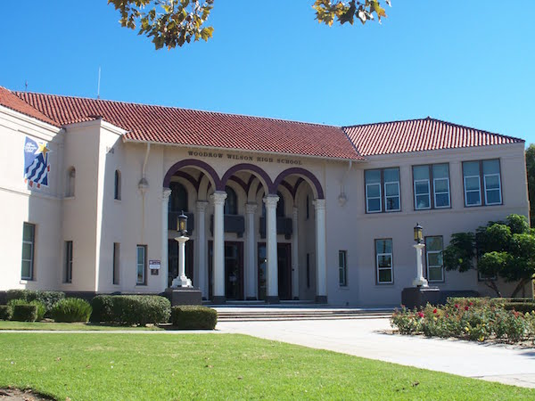
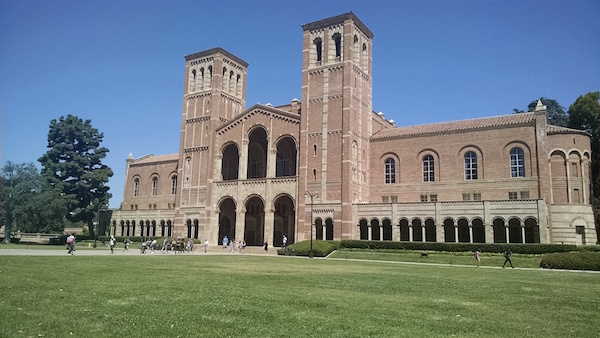

<!doctype html>
<html>
    <head>
        <title>Cade's Website</title>
        <meta charset="utf-8">
        <link href="https://fonts.googleapis.com/css?family=Roboto+Condensed" rel="stylesheet"> 
        <link href="https://fonts.googleapis.com/css?family=Raleway" rel="stylesheet">   
        <link href="https://fonts.googleapis.com/css?family=Lobster" rel="stylesheet">   
        <link href="app.css" rel="stylesheet"/>
    </head>
</html>
<header>
    <br>
    <h1>Cade's Website</h1>
    <br>
    <ul>
        <li><a href="index.html">Home Page</a></li>
        <li><a href="ATM.html">ATM</a></li>
        <li><a href="Future.html">Future</a></li>
        <li><a href="Soccer.html">Soccer</a></li>
    </ul>
</header>
<body>
    <article>
       <h2 id="All-About-Me">Future</h2>
    </article>

    <article>
        <h2>High School of Choice</h2>
        <p><h3>I aim to get into Woodrow Wilson High School due to the very inviting pathway known as W.A.V.E. The area around the school is safe and clean and the location is relatively close to my home making the commute more effective. My sister having gone there also influenced me to aim for the school.</h3></p>
        <center></center>
    </article>

    <article>
        <h2>College of Choice</h2>
        <p><h3>Ever since I heard that my parents went to U.C.L.A, my goal was to go and learn at the same college they did. U.C.L.A is best known for its majors in Academics. Myself, being interested in business economics, U.C.L.A would offer this major for me.</h3></p>
        <center></center>
    </article>


    <article>
    <h2>Career Interests</h2>
        <p><h3>I am not very certain on what really interests me. I've always gone back and forth between different careers, but I am interested somewhere around management, organization, or using technology. Coaching a sports team is also something I've wanted to do in the future.</h3>
        </p>
    </article>

    <article>
        <h2>Goals</h2>
        <p><h3>I have a handful of major and minor goals. Many I have alrady obtained and completed. My most definite goal for me is to soar through High School with the highest grades I can get that's within reach. No B's any of the 4 years I am there. I also hope to get into my dream college and graduate with a masters degree in business. It will take a lot of hard work but I hope to get into the soccer team as well. I want to prove that size doesn't matter in the world of soccer, or any sport.</h3></p>
    <article>
        
</body>
